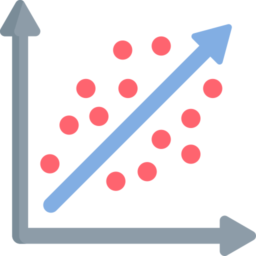
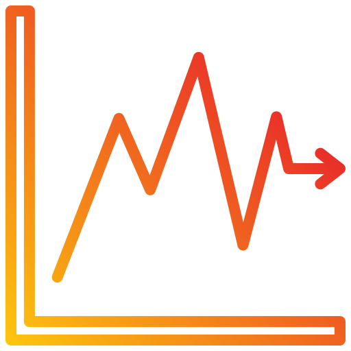
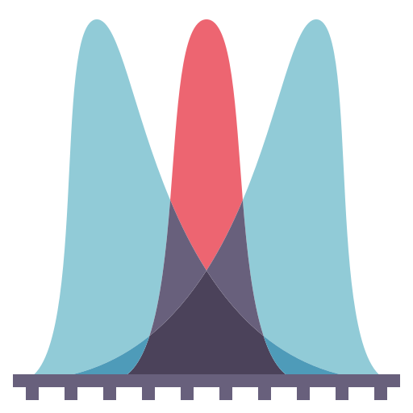

ICS294 - Econometría
Bienvenidos a ICS294!
Descripción
Asignatura teórico-práctica orientada a la aplicación de métodos estadísticos y econométricos para el análisis, modelamiento y evaluación de fenómenos económicos y sociales. El curso enfatiza el uso de modelos de regresión, análisis de datos reales y la correcta interpretación de resultados obtenidos mediante software especializado, incorporando criterios de inferencia, diagnóstico y validación de modelos.
Accede a los notebooks del curso para explorar el material con inteligencia artificial. Puedes hacer preguntas, obtener resúmenes y profundizar en los contenidos.
Contenidos
- Muestreo y análisis exploratorio de datos
- Naturaleza de la econometría y tipos de datos económicos
- Modelo de regresión lineal simple
- Modelo de regresión lineal múltiple
- Variables dummy y variables cualitativas
- Heterocedasticidad
- Regresión con datos de series de tiempo
- Introducción a econometría espacial
- Introducción al análisis multivariado
Todos los entregables se gestionan a través de GitHub. Crea una cuenta gratuita y clona el repositorio del curso usando el botón Use this template.
fralfaro/ics194-entregables
Secciones

Modelos de Regresión
Estimación e interpretación de modelos de regresión simple y múltiple (supuestos, vatiables dummies, etc.).

Inferencia Estadística
Intervalos de confianza, pruebas de hipótesis, significancia estadística de coeficientes y calidad del ajuste.

Aplicaciones Avanzadas
Análisis econométricos aplicados a series de tiempo y modelos estocásticos simples (como random walk).

Repaso Estadística y Probabilidad
Material de repaso: estadística descriptiva, variables aleatorias, inferencial e introducción a R con Google Colab.